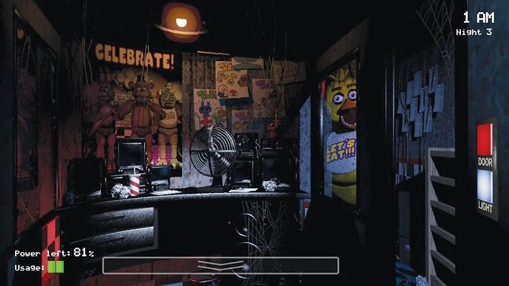

Eres un Guardia de Seguridad Nocturno que trabaja en la Pizzería de Freddy Fazbear, el objetivo único del juego es sobrevivir 5 noches y evitar ser cruelmente atrapado y asesinado por los animatronicos del establecimiento. Este juego es de la categoría de miedo, para sobrevivir tienes que mirar las cámaras y cerrar la puertas, para que el animatronico no te atrape, el problema es que el establecimiento funciona mal,y solo se pueden permitir el funcionamiento por baterias, a si que deberas de tener en cuenta que no se te gaste y llegar hasta las 6AM. Cada animatronico te ataca de una forma diferente asi que estate pendiente de cada uno.
